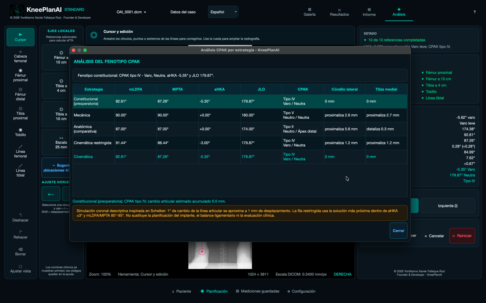
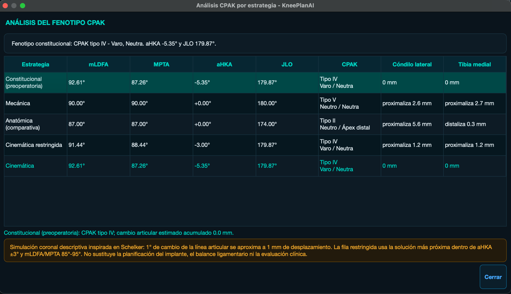
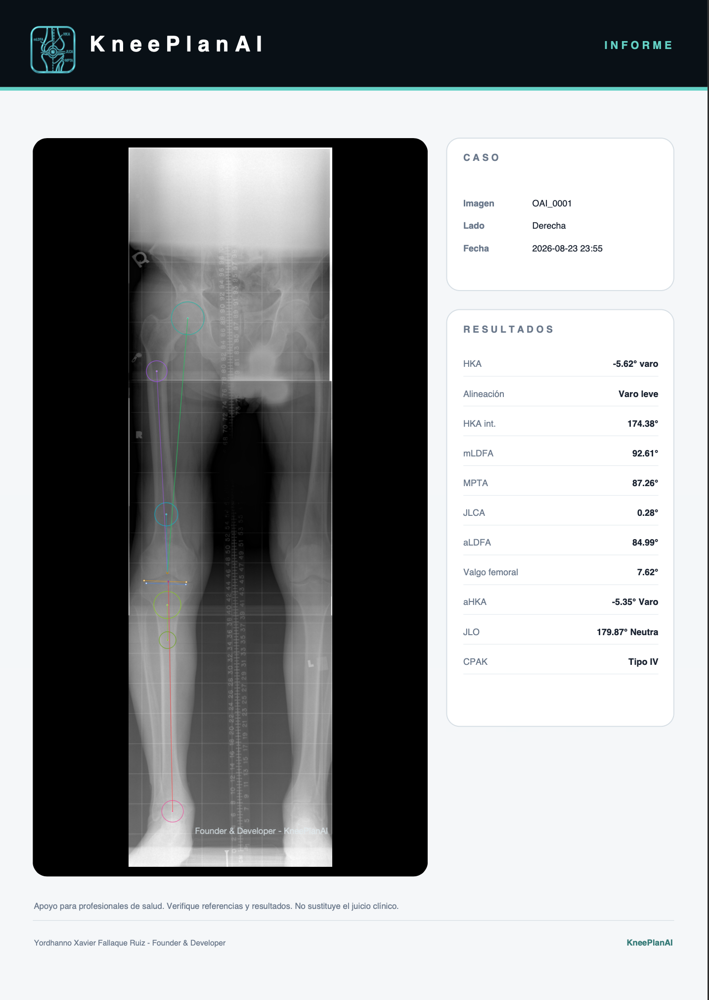

Abre tu radiografía
Compatible con DICOM, HEIC, PNG, JPEG, TIFF, AVIF y WebP.
Mide, revisa y documenta la alineación coronal en radiografías panorámicas de miembros inferiores.

KneePlanAI organiza las referencias anatómicas, los ángulos y el análisis CPAK sin reemplazar la revisión profesional.
Compatible con DICOM, HEIC, PNG, JPEG, TIFF, AVIF y WebP.
Coloca las referencias anatómicas y ajusta círculos, centros y líneas directamente sobre la imagen.
Visualiza aHKA, JLO, fenotipo CPAK y comparaciones descriptivas de estrategias de alineamiento.
Exporta un informe estructurado en PDF con la imagen y los resultados de alineación.


KneePlanAI Standard funciona localmente y no requiere crear una cuenta.
Consulta la guía de soporte o escríbenos para resolver dudas sobre instalación y uso.